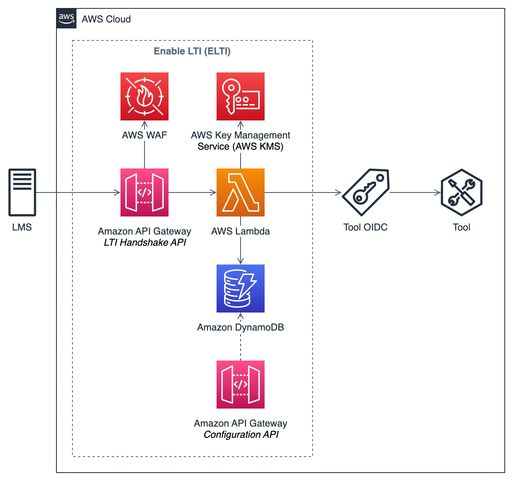

Architecture¶
AWS Service Overview¶
The following architecture represents an overview of the AWS services used for the implementation of eLTI.

eLTI leverages the following AWS services:
- AWS WAF is a web application firewall that helps protect web applications from attacks by allowing you to configure rules that allow, block, or monitor (count) web requests based on conditions that you define.
- Amazon API Gateway is a fully managed service that makes it easy for developers to create, publish, maintain, monitor, and secure APIs at any scale. Amazon API Gateway acts as the “Front Door” for accessing our application and proxy the entire HTTP request to the AWS Lambda function. It is also used as an API to configure the tools.
- AWS Lambda is a serverless, event-driven compute service that lets you run code for virtually any type of application or backend service without provisioning or managing servers. AWS Lambda provides the logic for the invoking the LTI handshakes and routing for the tool.
- Amazon DynamoDB is a fully managed, serverless, key-value NoSQL database designed to run high-performance applications at any scale. Amazon DynamoDB is used to store persistent data such as LTI platform configuration data and user state.
- AWS Key Management Service (AWS KMS) is a managed service that helps you more easily create and control the keys used for cryptographic operations. AWS KMS is used to verify messages and generate keys for signing JSON Web Token (JWT) tokens.
Detailed Flows¶
Out-of-band registration¶
The following component flow diagram shows how eLTI enables a tool to be integrated into a LMS.
graph LR
subgraph LT["Learning Tool"]
direction LR
eLTIAdmin("eLTI Admin") --3--> eLTI
eLTIAdmin --4--> ToolOIDC["Tool OIDC"]
eLTIAdmin("eLTI Admin") --5--> eLTI
ToolOIDC --- Tool
end
subgraph IT["Institution"]
direction RL
LMSAdmin("LMS Admin") --1--> LMS
end
IT -.2.-> LTOne time out-of-band registration steps:
- LMS Admin configures the Learning Tool inside of the LMS using the eLTI URLs.
- LMS Admin shares the output of the configuration with the eLTI admin. These details include the
client_id,secret_key, anddeployment_id. - eLTI Admin saves the platform information using eLTI's Configuration API. A platform config record is created in DynamoDB with the shared
client_idanddeployment_id, in addition to the platform'siss,auth_token_url,auth_login_url, andaccess_token_url. - eLTI Admin creates a new OIDC IDP in the Tool's OIDC provider with
client_id,secret_key, and eLTI URLs for authorize and token endpoints. - eLTI Admin adds Tool and Tool OIDC information to eLTI via Configuration API. A tool config record is created in DynamoDB.
References:
OpenID Connect launch¶
The following component flow diagram shows how eLTI enables a Tool to be launched by a LMS using OpenID Connect Launch flow.
graph LR
subgraph LT["Learning Tool"]
eLTI
ToolOIDC["Tool OIDC"]
Tool
end
subgraph IT["Institution"]
User("Platform User") --1--> LMS
end
LMS --2--> eLTI
eLTI --3--> eLTI
eLTI --4--> LMS
LMS --5--> LMS
LMS --6--> eLTI
eLTI --7--> eLTI
eLTI --8--> ToolOIDC
ToolOIDC --9--> eLTI
eLTI --10--> ToolOIDC
eLTI <--11--> ToolOIDC
ToolOIDC --12--> ToolThe beginning of a platform initiated message contains the following OIDC launch steps:
- A user launches LTI resource in LMS platform which is created using this tool.
- Initiate 3rd party login request POST or GET
/logineLTI endpoint. - eLTI verifies
client_idandiss, then createsstateandnonceuuids and stores them in DynamoDB. - eLTI redirects user to LMS platform’s
authorize_redirectendpoint, registered in the Out-of-band registration flow. Theredirect_urlcontains thelogin_hintandlti_message_hintalso provided in the payload from #3 above, in addition to thestateandnoncevalues created. - LMS verifies that
redirect_urlis registered withclient_idbeing sent, also confirms thatlogin_hintandlti_message_hintare valid. - LMS calls the eLTI’s
/launchendpoint, registered in the Out-of-band registration flow, and gives the JWTid_tokenandaccess_tokento eLTI. - eLTI validates
state,nonce, andid_tokenbefore saving to DynamoDB and initializes Tool OIDC login flow. - eLTI redirects user to the Tool OIDC’s
/oauth2/authorizeendpoint, registered in the Out-of-band registration flow. Thestateandnoncevalues that are created in #3 are sent included in the URL. Example of redirect URL:https://{tool_oidc_url}/oauth2/authorize?identity_provider={lms_idp}&redirect_uri=&response_type=code&client_id=&scope=openid&state=<state>&nonce=<nonce> - Tool OIDC provider will call back eLTI’s
/authProxyendpoint, registered in the Out-of-band registration flow, and sends backstateandnoncevalues. - eLTI creates a new
codevalue which is a uuid, associates it in DynamoDB withstateandnoncecreated in #3, redirects to theredirect_urlthat from #9, then sends thecodeandstatein url params and addsnonceas a header value. - Tool OIDC provider calls back eLTI’s
/tokenProxyendpoint, registered in the Out-of-band registration flow. eLTI confirms thatstate,nonce, andcodeare matching the values in DynamoDB and returns the token associated with as JSON response to this request. - Tool OIDC confirms the validity of the
id_tokenand redirects user to theredirect_urlthat it got in #8 which is the Tool URL that user wants to load in LMS.
References:
- LTI 1.3 - OpenID Connect Launch Flow Overview Specification
- LTI 1.3 - Authentication Response Validation
- OpenID Connect - Authorization Code Flow Steps
Deep Linking workflow¶
The following component flow diagram shows how eLTI enables a Tool to integrate the Deep Linking workflow.
graph LR
User --1--> LMS
LMS -."Launch Flow".-> eLTI
subgraph LT["Learning Tool"]
eLTI -.-> ToolOIDC["Tool OIDC"]
ToolOIDC --2--> Tool
Tool --3--> Tool
Tool --4--> eLTI
end
subgraph IT["Institution"]
User("Platform User")
LMS --6--> LMS
end
eLTI --5--> LMSDeep Linking workflow steps:
- User clicks on eLTI Tool from a module, assignment, or other context which initiates an OIDC launch flow, refer to OpenID Connect launch flow.
- eLTI's Lambda function for the
/launchendpoint checks the claim value forlti_message_typeinside the theid_token. If thelti_message_typeequalsLtiDeepLinkingRequest, then the Deep Linking flow starts. - The request is then routed to the Tool at the given launch link location. The Tool then renders the requested content. The Tool can allow users to select resources to get resource links to insert into the LMS. These resource links can implement line items to specify grading and scoring. LTI Resource Link Specification
- After a user selects the resources in the Tool, the Tool submits request to eLTI with the
resource_linksandid_token, where eLTI signs the request to be sent to the LMS. - eLTI creates a deep linking response form and auto submits it to the
deep_linking_settings.deep_link_return_urlinside theid_tokenclaim. - LMS will process the content items and render the module or assignment or other context with the selected resources.
References:
Names and Role Provisioning Services (NRPS) workflow¶
The following component flow diagram shows how eLTI enables a Tool to integrate the NRPS workflow.
graph LR
subgraph LT["Learning Tool"]
eLTI
Tool
end
subgraph IT["Institution"]
LMS
end
Tool --1--> eLTI
eLTI --2--> LMS
eLTI --3--> LMS
eLTI --4--> ToolNRPS workflow steps:
- Tool calls eLTI's
/rosterRetrievalendpoint withid_token,issuer,client_id,deployment_idandcontext_memberships_url.context_memberships_urlspecifies the customer LMS's NRPS endpoint for a specific course. - eLTI's Lambda function for the
/rosterRetrievalendpoint retrieves the platform configuration, which contains client ID, access token URL, and key ID (kid) for the LMS associated with the combination ofclient_id,deployment_id, andissuer. It then generates the JWT token from the platform configuration value and request access token from the LMS's access token URL. - Once a new access token is retrieved, it then submit
GETrequest tocontext_memberships_urlto retrieve the student roster from LMS. - When the LMS returns the response to the eLTI, eLTI forwards the response to Tool.
References: